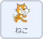
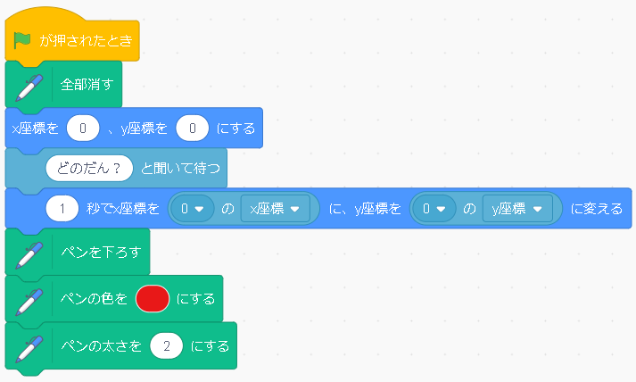
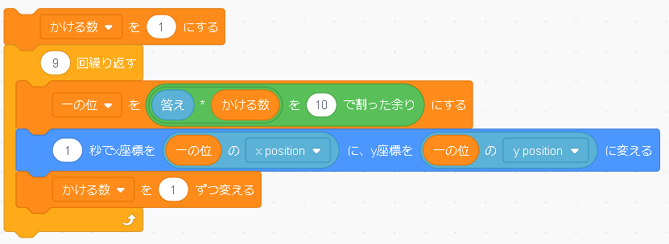
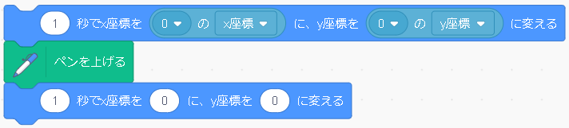

九九で図形を描く

九九の各段の答えの一の位を繋げると、このようにつなげると面白い図形ができるよ、というものです。九九を覚える段階だと２年生なのですが、ちょっとプログラムが難しいかもしれないので、余りの学習をする３年生としています。背景や点は事前に準備します。
プログラムするスプライト |
|
|  | １．準備
まず、ペンで書くようなものは、 実行前に［全部消す］>というブロックを置くのは必須です。 何回も実行する際に、書いたところが残ってしまうからです。そして、適当な位置に猫さんを設置します。まだ描き始めないので、見えるところに置いておきましょう。 次に九九のどの段の図形を書きたいのかをきき、段の数を［答え］にゲットします。 段の数が分かれば、あとは図形を描く直前までの準備をします。まずスタート位置につきます。 先ほどの準備では、それぞれの点のスプライトに数字の名前を付けてもらったと思うのですが、 ０という名前のついた点（つまり０の数字が書かれてある点のところに）の座標に一秒かけて移動します。そして、ペンの準備をします。 ペンを降ろし、ペンの色と太さを指定したら準備完了です。 |
|  | ２.図形を描く
まず、今ゼロの位置にいるので、次の場所に移動したいのですが、 どうやって指定された段と１～９の数字を書けた結果の一の位を導き出すのかを見てみます。 一の位を導き出すブロックは、９回繰り返すの後のブロックです。 このプログラムでは、（答え）×（かける数）を１０で割ったときの余りをというブロックを使っていますね。この計算で、一の位がわかります。 例えば６×８＝４８だと、 １０で割った余りは８になるので、一の位８を計算で出すことができます。 １０で割るということは、十の位がどんな数でも割り切れて、かつ一の位は割れずに残ってしまうので、それによって導き出しています。 そして得られた結果を一の位という変数に格納します。 次のブロックは、猫さんに移動してもらうために位置を指定しています。 図形の線を書くためです。 一の位の数の名前が付いたスプライトのX,Y座標に移動するように指示しています。 先ほどの点のスプライトの名前を数字にしたのは、導き出した一の位と対応するためです。 さて、これで移動できるのですが、このプログラムを９個描くのは大変です。 効率的にするために繰り返しのブロックを使います。 繰り返しをせずプログラムをすると、かける数だけ変わりますよね。 つまり、かける数を変えながら繰り返しをしていけばいいわけです。 なので、まず、かける数と名前のついた変数をまず繰り返す前に１を格納します。 そうすると、繰り返しがスタートしたときは掛ける数は１です。 計算が終わり、位置も移動した後、次の数の計算に移りたいので、 計算をする前に、かける数を一つずらす、つまり１増やします。 次の計算では掛ける数が１増えた状態で計算されていき、位置が移動する。 これを掛ける数分繰り返すことでできます。 |
|  | ３.最後に
今、９を掛けたときの一の位のところにいるので、１０を掛けたときの一の位、つまり０の位置に戻します。 そして書き終わったのでペンを上げ、中央に戻ってきてこのプログラムは終了です。 |